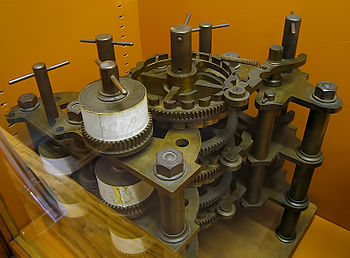
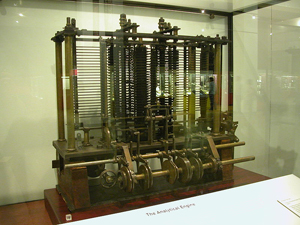

В 1812 году английский математик и экономист Чарльз Бэббидж начал работу над созданием, так называемой «разностной» машины, которая, по его замыслам, должна была не просто выполнять арифметический действия, а проводить вычисления по программе, задающей определённую функцию. В качестве основного элемента своей машины Бэббидж взял зубчатое колесо для запоминания одного разряда числа (всего таких колёс было 18). К 1822 году учёный построил небольшую действующую модель и рассчитал на ней таблицу квадратов.

В 1834 году Бэббидж приступил к созданию «аналитической» машины. Его проект содержал более 2000 чертежей различных узлов. Машина Бэббиджа предполагалась как чисто механическое устройство с паровым приводом. Она состояла из хранилища для чисел («склад»), устройства для производства арифметических действий над числами (Бэббидж назвал его «фабрикой») и устройства, управляющего операциями машины в нужной последовательности, включая перенос чисел из одного места в другое; были предусмотрены средства для ввода и вывода чисел. Бэббидж работал над созданием своей машины до конца своей жизни (он умер в 1871 году), успев сделать лишь некоторые узлы своей машины, которая оказалась слишком сложной для того уровня развития техники. После Бэббиджа значительный вклад в развитие техники автоматизации счёта внёс американский изобретатель Г. Холлерит, который в 1890 году впервые построил ручной перфоратор для нанесения цифровых данных на перфокарты и ввёл механическую сортировку для раскладки этих перфокарт в зависимости от места пробоя. Им была построена машина — табулятор, которая прощупывала отверстия на перфокартах, воспринимала их как соответствующие числа и подсчитывала их. Табуляторы Холлерита были использованы при переписи населения в США, Австрии, Канаде, Норвегии и в др. странах.

Предпосылки к появлению компьютера формировались, наверное, с древних времен, однако нередко обзор начинают со счетной машины Блеза Паскаля, которую он сконструировал в 1642 г.
Подробно